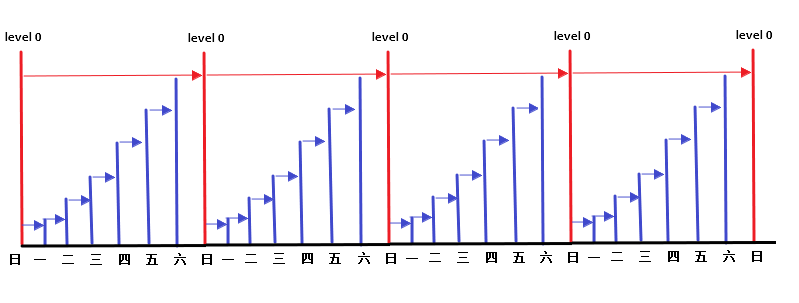
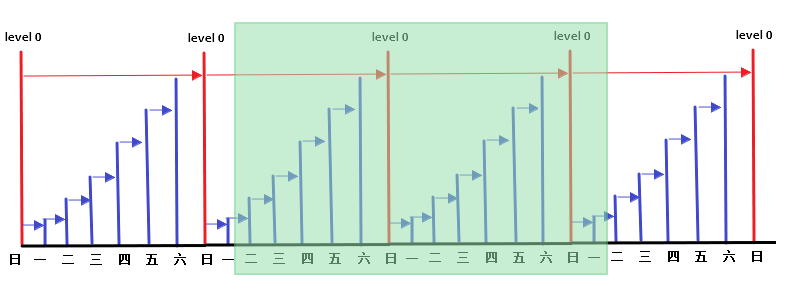

2019.12.15 BoobooWei
冷备计划的制定和实施 概念 冷备计划 RMAN备份周期 RMAN备份保留策略 Linux计划任务crontab RMAN自带的retention policy RMAN备份脚本 /home/oracle/backup_scripts/rmanbk_inc0/home/oracle/backup_scripts/rmanbk_inc1/home/oracle/backup_scripts/rmanbk_crontab.shCrontab配置crontab -e -u oracle Linux删除14天的文件rmanbk_del.sh 冷备-RMAN在线热备-实施记录
概念
注意：增量备份（通用）=差异增量（Oracle） 差异备份（通用）=累计增量（Oracle）
包含从最近一次备份以来被修改或添加的数据块.可以分为差异增量备份 和累计增量备份
差异增量备份：仅仅包含n级或n级以下被修改过的数据块。备份数据量小，恢复时间长。
累计增量备份：仅仅包含n-1级或n-1级以下被修改过的数据块。备份数据量大，恢复时间短。
0级增量备份相当于一个完整备份,该备份包含所有已用的数据块文件,与完整备份的差异是完整备份不能用作级增量备份的基础
冷备计划
备份周期：一周一全备，每天一增备
备份数据保留策略：保留近14天的备份
RMAN备份周期 一周一全备，每天一增备

每周日晚做 0 级备份,就是备份所有使用过的数据块.
周一做 1 级增量,备份小于等于 1 以来备份后发生变化的块,前面有个 0 级备份.所以备份当天的变化.
周二做 1 级增量,备份小于等于 1 以来备份后发生变化的块,前面有个 1 级备份.所以备份当天的变化.
周三做 1 级增量,备份小于等于 1 以来备份后发生变化的块,前面有个 1 级备份.所以备份当天的变化.
周四做 1 级增量,备份小于等于 1 以来备份后发生变化的块,前面有个 1 级备份.所以备份当天的变化.
周五做 1 级增量,备份小于等于 1 以来备份后发生变化的块,前面有个 1 级备份.所以备份当天的变化.
周六做 1 级增量,备份小于等于 1 以来备份后发生变化的块,前面有个 1 级备份.所以备份当天的变化.
周日做 0 级增量, 备份所有使用过的数据块.
RMAN备份保留策略 保留近14天的备份

实现方式：
Linux计划任务crontab
RMAN自带的retention policy
Linux计划任务crontab 保留14天的备份数据，当今天是周一时，会保留 近14天的数据，删除两周前的周一的数据。
周日
周一
周二
周三
周四
周五
周六
清除
保留
保留
保留
保留
保留
保留
保留
保留
保留
保留
保留
保留
保留
Now
因此保留14天的备份数据，可以将数据恢复的时间范围为：上周周日~本周当前
RMAN自带的retention policy 保留14天的备份数据，即每份备份数据的冗余备份数量为14
configure retention policy to redundancy 14; configure retention policy to recovery window of 14 days; report obsolete; delete obsolete;
RMAN备份脚本 /home/oracle/backup_scripts/rmanbk_inc0run { configure retention policy to recovery window of 14 days; configure controlfile autobackup on; allocate channel ch1 type disk; backup as compressed backupset incremental level 0 format '/home/oracle/rmbk/incr0_%d_%U' tag 'day_incr0' database plus archivelog delete input ;crosscheck backup ; crosscheck archivelog all; delete noprompt obsolete;delete noprompt expired backup ;delete noprompt expired archivelog all ;release channel ch1;}
/home/oracle/backup_scripts/rmanbk_inc1run { configure retention policy to recovery window of 14 days; configure controlfile autobackup on; allocate channel ch1 type disk; backup as compressed backupset incremental level 1 format '/home/oracle/rmbk/incr1_%d_%U' tag 'day_incr1' database plus archivelog delete input ;crosscheck backup ; crosscheck archivelog all; delete noprompt obsolete;delete noprompt expired backup ;delete noprompt expired archivelog all ;release channel ch1;}
/home/oracle/backup_scripts/rmanbk_crontab.sh#!/bin/bash PATH=$PATH :$HOME /bin export PATHexport ORACLE_BASE=/u01/app/oracleexport ORACLE_HOME=/u01/app/oracle/product/11.2.0.4export ORACLE_SID=BOOBOOexport PATH=$PATH :$ORACLE_HOME /binexport TNS_ADMIN=$ORACLE_HOME /network/adminexport LD_LIBRARY_PATH=$LD_LIBRARY_PATH :ORACLE_HOME/libexport NLS_LANG=AMERICAN_AMERICA.ZHS16GBKexport ORA_NLS10=$ORACLE_HOME /nls/dataexport SQLPATH="/home/oracle/.login.sql" level=$1 /u01/app/oracle/product/11.2.0.4/bin/rman target / log =/home/oracle/rmbk_log/bak_inc${level} .log append cmdfile=/home/oracle/backup_scripts/rmanbk_inc${level}
Crontab配置crontab -e -u oracle 30 22 * * 0 /bin/bash /home/oracle/backup_scripts/rmanbk_crontab.sh 0 30 22 * * 1 /bin/bash /home/oracle/backup_scripts/rmanbk_crontab.sh 1 30 22 * * 2 /bin/bash /home/oracle/backup_scripts/rmanbk_crontab.sh 1 30 22 * * 3 /bin/bash /home/oracle/backup_scripts/rmanbk_crontab.sh 1 30 22 * * 4 /bin/bash /home/oracle/backup_scripts/rmanbk_crontab.sh 1 30 22 * * 5 /bin/bash /home/oracle/backup_scripts/rmanbk_crontab.sh 1 30 22 * * 6 /bin/bash /home/oracle/backup_scripts/rmanbk_crontab.sh 1 40 22 * * * /bin/bash /home/oracle/backup_scripts/rmanbk_del.sh
Linux删除14天的文件rmanbk_del.sh find /home/oracle/rmbk/ -mtime +13 -exec ls {} \; find /home/oracle/rmbk/ -mtime +13 -exec rm -rf {} \;
冷备-RMAN在线热备-实施记录 [root@oratest ~] root [root@oratest ~] crontab: installing new crontab [root@oratest ~] 30 22 * * 0 /bin/bash /home/oracle/backup_scripts/rmanbk_crontab.sh 0 30 22 * * 1 /bin/bash /home/oracle/backup_scripts/rmanbk_crontab.sh 1 30 22 * * 2 /bin/bash /home/oracle/backup_scripts/rmanbk_crontab.sh 1 30 22 * * 3 /bin/bash /home/oracle/backup_scripts/rmanbk_crontab.sh 1 30 22 * * 4 /bin/bash /home/oracle/backup_scripts/rmanbk_crontab.sh 1 30 22 * * 5 /bin/bash /home/oracle/backup_scripts/rmanbk_crontab.sh 1 30 22 * * 6 /bin/bash /home/oracle/backup_scripts/rmanbk_crontab.sh 1 [root@oratest ~] Stopping crond: [ OK ] Starting crond: [ OK ] -- 模拟时间变化： 周日~周六 date -s "2020-01-05 22:29:55" date -s "2020-01-06 22:29:55" date -s "2020-01-07 22:29:55" date -s "2020-01-08 22:29:55" date -s "2020-01-09 22:29:55" date -s "2020-01-10 22:29:55" date -s "2020-01-11 22:29:55" 周日~周六 date -s "2020-01-12 22:29:55" date -s "2020-01-13 22:29:55" date -s "2020-01-14 22:29:55" date -s "2020-01-15 22:29:55" date -s "2020-01-16 22:29:55" date -s "2020-01-17 22:29:55" date -s "2020-01-18 22:29:55" 周日~周六 date -s "2020-01-19 22:29:55" 应该删除 "2020-01-05" 的备份 date -s "2020-01-20 22:29:55" 应该删除 "2020-01-06" 的备份 date -s "2020-01-21 22:29:55" 应该删除 "2020-01-07" 的备份 date -s "2020-01-22 22:29:55" 应该删除 "2020-01-08" 的备份 date -s "2020-01-23 22:29:55" 应该删除 "2020-01-09" 的备份 date -s "2020-01-24 22:29:55" 应该删除 "2020-01-10" 的备份 date -s "2020-01-25 22:29:55" 应该删除 "2020-01-11" 的备份 date -s "2020-01-26 22:29:55" 应该删除 "2020-01-12" 的备份 --观察结果 [root@oratest ~] Mon Jan 20 22:29:59 CST 2020 [root@oratest ~] Tue Jan 21 22:29:59 CST 2020 [root@oratest ~] Wed Jan 22 22:29:59 CST 2020
参考命令文章